Agent Deck, a short tour
A macOS menu bar app for your Claude Code sessions: see what's running, answer prompts without switching to the terminal, and keep an eye on your usage limits. The pictures below are the real app, rendered with sample sessions.
Dot, in the menu bar
- Below 50% it's just Dot. Past that you get the number for whichever limit is closer, 5-hour or weekly, plus "full ~15:58" when you're on pace to run out and "back 17:58" once you're at 100%.
- Dot's rim is the same meter: grey, orange from your warning level (80% unless you change it), red when full.
- Its face shows what your sessions need. A blue arc spins while a session works; an orange "!" means one is waiting for you, a red one that it wants to run something risky.
- In the menu bar Dot holds still between blinks, so it costs next to no CPU.
- Right-click Dot to snooze alerts for an hour, keep the Mac awake while Claude works, start a new session, or open Details or Settings.
Idleblinks now and then
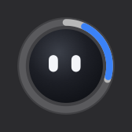
Workingblue arc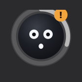
Needs youorange "!"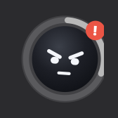
Riskyred "!"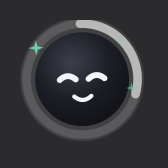
Donea long task finishedCloseat your warning level
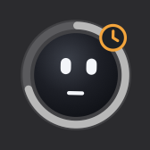
Runs outbefore it resets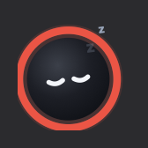
Limit reachedasleep until reset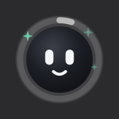
Backthe limit resetThe dropdown
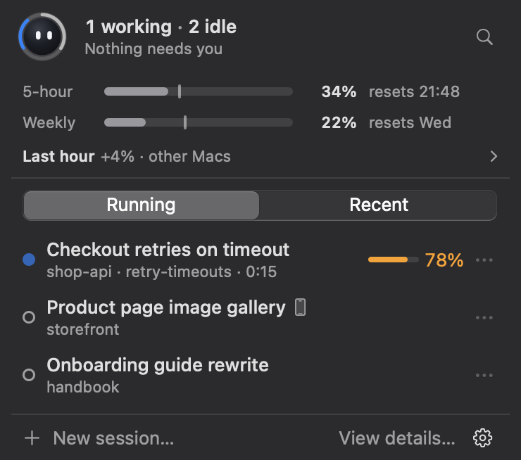
- Running and Recent tabs. It opens on Running, or on Recent when nothing is running. ⌘1 and ⌘2 switch.
- Each bar says when it resets ("resets 03:33", "resets Wed"). The thin tick is how much of that window's time has gone: fill past it means you're using it faster than the clock.
- Dot and one sentence on top: what's running, and whether anything needs you. The counts are filters; they show as chips when you point at them. A snooze or keep-awake shows here too.
- Two slim bars for the 5-hour and weekly limits with their reset times. "Last hour" opens into a split by session.
- Each session: a blue dot while it works, its folder, its branch when that isn't main, and how long it has been working. Context shows once it passes 70%.
- ↑↓ to move, ⏎ to open, ⌘K for every action on the selected row.
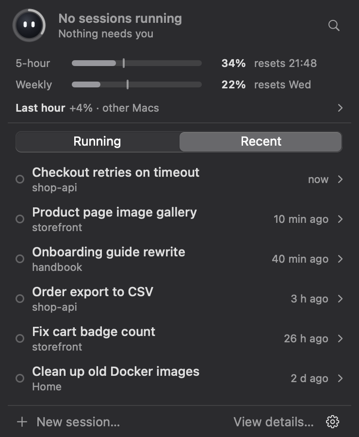
- Recent lists closed sessions with how long ago you used them. Click one to preview it; resume it in your terminal.
- Filtering by working or idle shrinks the panel to fit.
Answering prompts
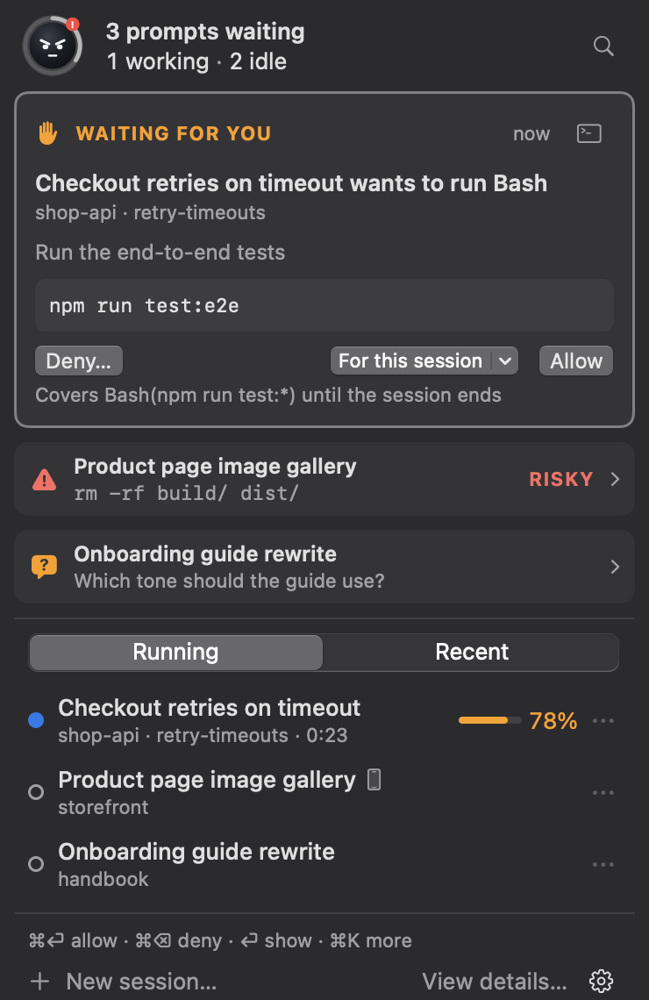
- One prompt is in focus as a card; the others wait as one-line rows, with a red RISKY tag where it applies. Click one to bring it forward. An icon says what each one is: a hand for a permission, a speech bubble for a question, a clipboard for a plan, a triangle when it's risky.
- A card says who wants what, what the session did since you last looked, the command, then the buttons. "For this session" allows the suggested rule until the session ends; its arrow keeps it in this project or in every project.
- Risky commands (deleting folders, force-pushing,
sudo…) say so in red, and Deny is the main button. They can only be allowed with a click. - One keyboard line fits the selected card: ⌘⏎ allow, ⌘⌫ deny, 1–4 answer, ⏎ show it in its terminal. These keys only work while the menu is open, so they never clash with other apps.
- The prompt stays in the terminal too: whichever you answer first wins.
Alerts
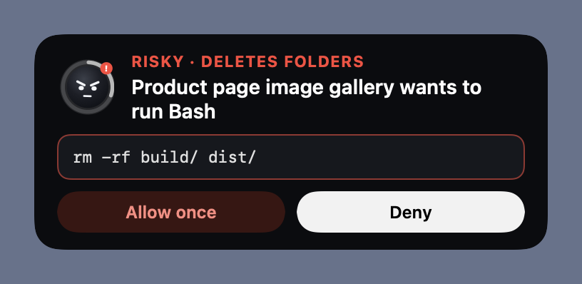
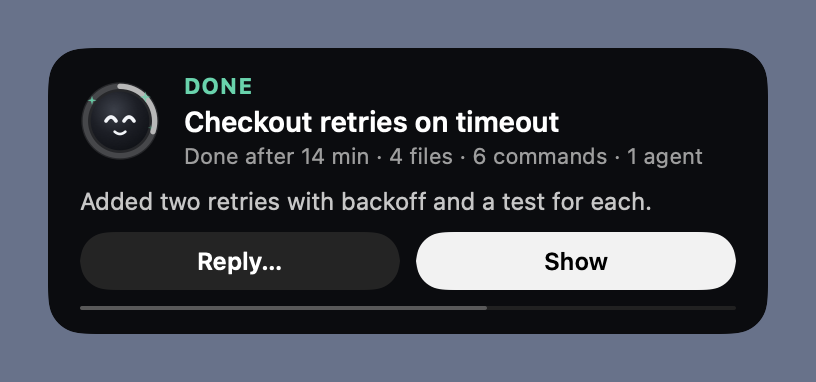
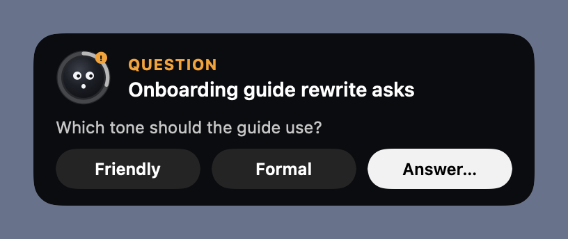
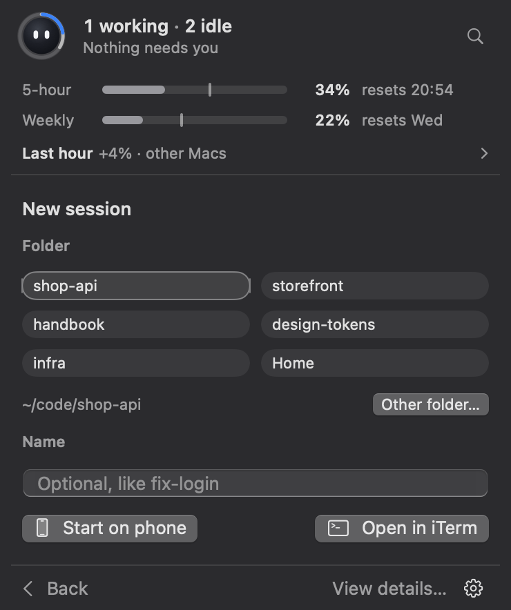
At the limit
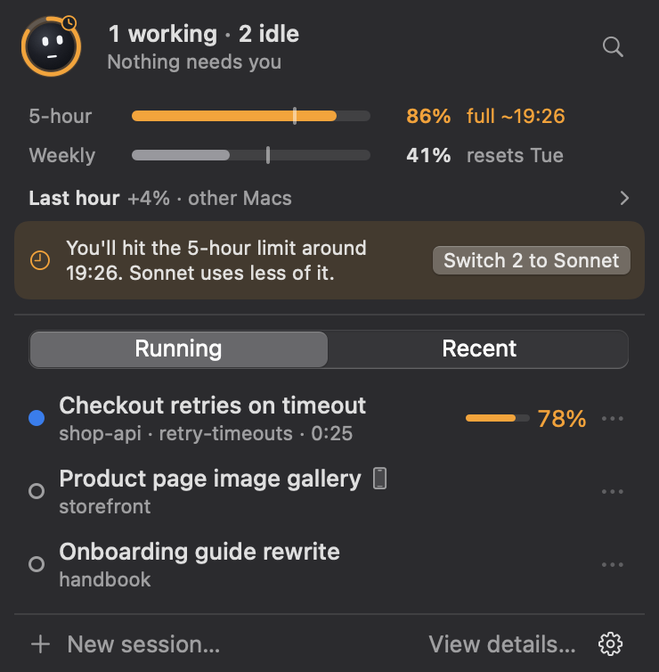
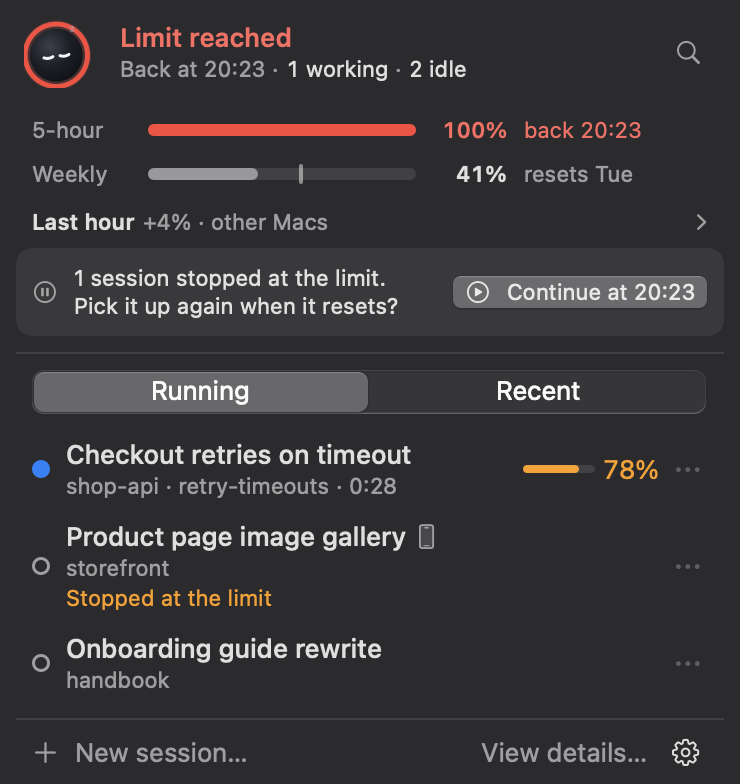
First run
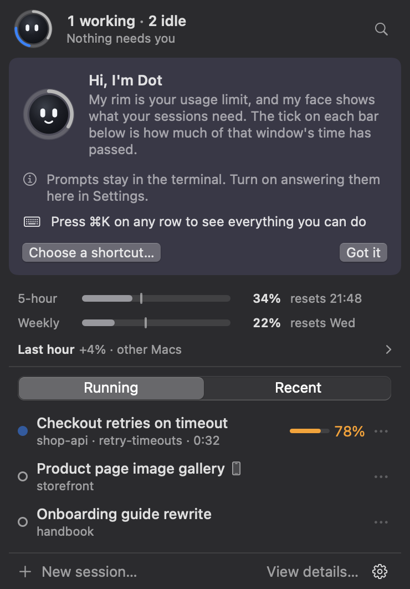
- Dot says hello, explains the rim and the tick, checks that prompts can be answered here, and offers to choose a shortcut that opens the menu from any app. The bars stay visible under it.
Details window
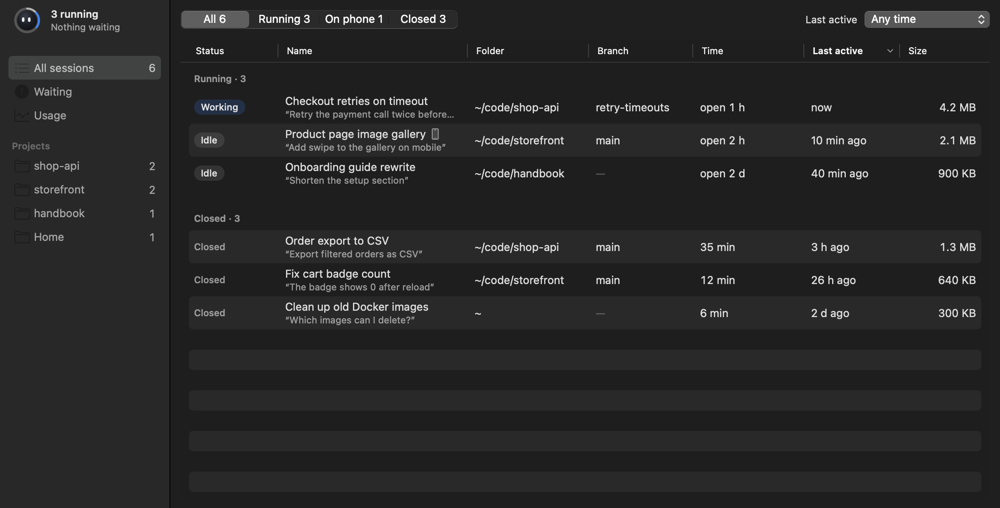
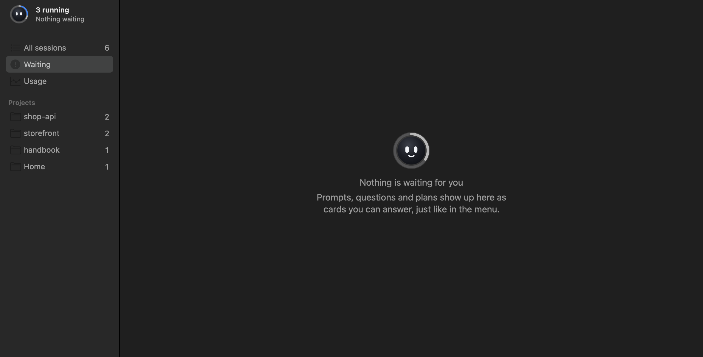
Settings
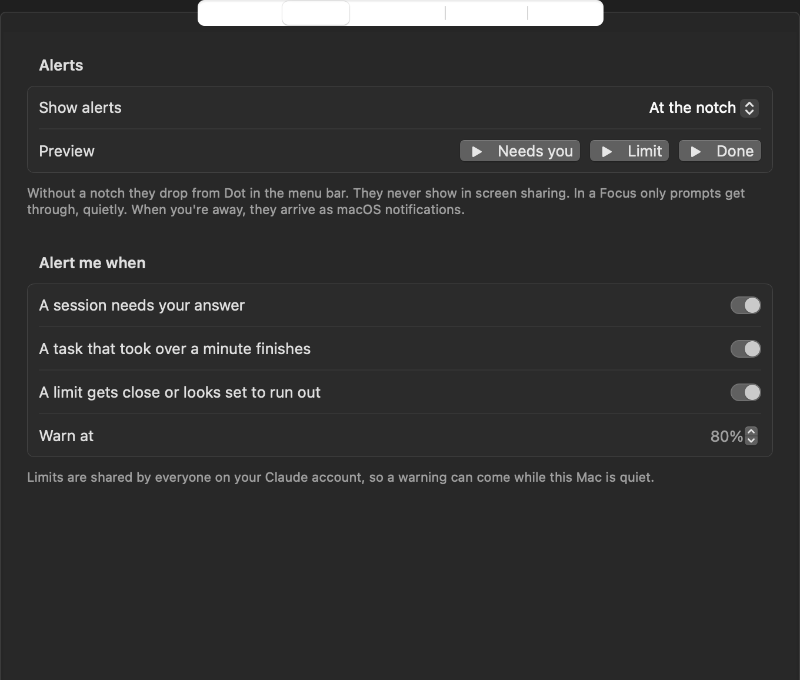
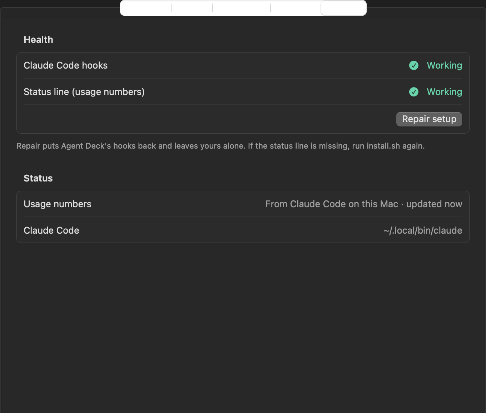
The pictures are rendered from the app's own views with made-up sessions, so they match the app as built.